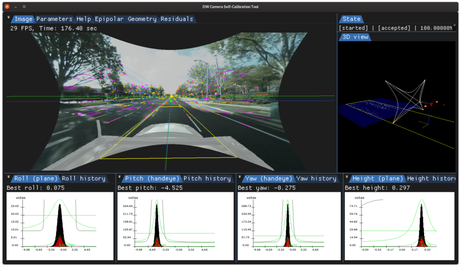
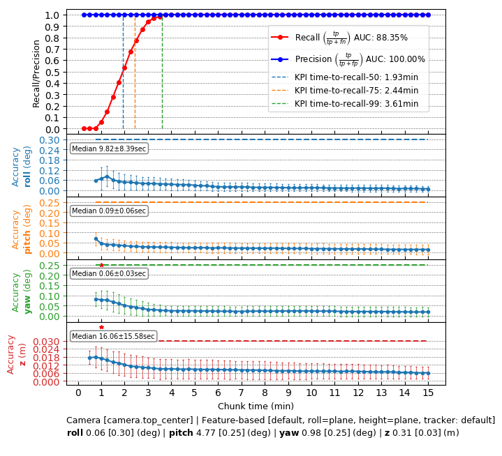

Operating Principle
The camera's extrinsic pose calibration with respect to the vehicle is represented by both orientation and position parameters.
Orientation parameters are pitch and roll with respect to a nominal ground plane, and yaw with respect to the car's forward direction. The camera's pitch and yaw orientation components are crucial for lane-holding, where the accuracy requirements are such that relying only on factory calibration is unrealistic. Pitch and roll are important for, e.g., distance estimation and ground plane projections. In a similar way, the camera's height is crucial for map generation of road markings on the ground.
NVIDIA® DriveWorks uses visually tracked features to estimate camera motion and calibrate the camera's full orientation and height component in a self-calibration setting. Pitch and yaw are calibrated simultaneously by comparing the translation direction obtained from the visual motion and the car's egomotion. Likewise, roll is calibrated by matching estimated angular motion of the camera with the car's egomotion, and requires turn maneuvers to be estimated. In addition, visually tracked and triangulated features on the ground plane next to the car are used to estimate the height component of the camera's position relative to the car.
Camera Motion Estimation
Camera motion estimation is performed by considering a pair of images and minimizing the epipolar-based error of it's tracked features. The calibration engine receives feature tracks for each frame and it will decide which image pairs are suitable for calibration. This results in camera motion in form of a rigid transformation (rotation and translation direction) between the camera at two points in time.
Camera Roll / Pitch / Yaw / Height
The visual motion obtained in the previous step is compared to the motion of the car (estimated by the egomotion module). Using the well-known hand-eye constraint, the relative transformation between the camera and the car is estimated. This relative transform provides the pitch and yaw of the camera. Turning car motion constraints the roll of the camera. Additionally, the camera motion is used to triangulate feature tracks on the ground next to the car, from which the camera's height is inferred.
The instantaneous calibration for an image pair is accumulated in histograms for the calibration's roll, pitch, yaw, and height components to estimate a final calibration in a robust way.

Tracked features image (top), roll/pitch/yaw/height histograms of a feature-calibrated camera (bottom), collected over a period of time. The nominal calibration is indicated by blue horizon/forward directions, the corrected calibration by green indicators
Requirements
Initialization Requirements
- Nominal values on camera calibration
- Orientation(roll/pitch/yaw): roll/pitch/yaw less than 5 degree error
- Position(x/y/z): less than 10 mm
- Intrinsic calibration: accurate to 0.5 pixel
Runtime Calibration Dependencies
- Any height calibration: absolute scale is inferred from egomotion, which needs to use calibrated odometry properties (e.g., wheel radii via radar self-calibration)
- Side-camera roll calibration: side-camera roll is inferred from egomotion's axis of rotation, which needs to be based on an accurate IMU calibration
Input Requirements
- Assumption: feature tracks compatible with DriveWork's module Features
- Vehicle egomotion: requirements can be found in the Egomotion module
Output Requirements
- Corrected calibration for pitch/yaw (mandatory) and roll/height (optionally, if requested by user)
- Correction accuracy:
- pitch/yaw: less than 0.20deg error
- roll: less than 0.25deg error
- height: less than 3cm error
- Time/Events to correction:
- pitch/yaw: less than 1:44 minutes in 75% of the cases, less than 3:30 minutes in 100% of the cases
- roll: correction depends on turning motion, and requires less than four strong turns in 75% of the cases, and less than six strong turns in 100% of the cases
- height: less than 2:41 minutes in 75% of the cases, less than 4:15 minutes in 100% of the cases
Cross-validation KPI
Several hours of data are used to produce a reference calibration value for cross-validation. Then, short periods of data are evaluated for whether they can recover the same values. For example, the graph below shows precision/recall curves of motion-based camera roll/pitch/yaw/height self-calibration. Precision indicates that an accepted calibration is within a fixed precision threshold from the reference calibration, and recall indicates the ratio of accepted calibrations in the given amount of time.

Workflow
The following code snippet shows the general structure of a program that performs camera self-calibration
dwFeatureListHandle_t featureListHandle;
while(true)
{
dwFeatureTracker_trackFeatures(featureListHandle, ...);
dwFeatureListPointers featureDataGPU;
dwFeatureList_getDataPointers(&featureDataGPU, ..., featureListHandle);
}
DW_API_PUBLIC dwStatus dwCalibrationEngine_getCalibrationStatus(dwCalibrationStatus *status, dwCalibrationRoutineHandle_t routine, dwCalibrationEngineHandle_t engine)
Returns the current status of a calibration routine.
DW_API_PUBLIC dwStatus dwCalibrationEngine_addFeatureDetections(uint32_t featureCapacity, uint32_t historyCapacity, const uint32_t *d_featureCount, const uint32_t *d_ages, const dwVector2f *d_locationHistory, const dwFeature2DStatus *d_featureStatuses, uint32_t currentTimeIdx, dwTime_t timestamp, uint32_t sensorIndex, dwCalibrationEngineHandle_t engine)
Adds detected visual features to the calibration engine.
DW_API_PUBLIC dwStatus dwCalibrationEngine_initialize(dwCalibrationEngineHandle_t *engine, dwRigHandle_t rig, dwContextHandle_t context)
Creates and initializes a Calibration Engine.
DW_API_PUBLIC dwStatus dwCalibrationEngine_getSensorToRigTransformation(dwTransformation3f *sensorToRig, dwCalibrationRoutineHandle_t routine, dwCalibrationEngineHandle_t engine)
Returns the current sensor to rig transformation of a calibration routine estimating this transformat...
DW_API_PUBLIC dwStatus dwCalibrationEngine_startCalibration(dwCalibrationRoutineHandle_t routine, dwCalibrationEngineHandle_t engine)
Starts a calibration routine associated with a calibration engine.
DW_API_PUBLIC dwStatus dwCalibrationEngine_initializeCamera(dwCalibrationRoutineHandle_t *routine, uint32_t sensorIndex, const dwCalibrationCameraParams *params, dwEgomotionConstHandle_t egomotion, cudaStream_t stream, dwCalibrationEngineHandle_t engine)
Initializes a camera calibration routine designated by the sensor provided to the method.
DW_API_PUBLIC dwStatus dwCalibrationEngine_stopCalibration(dwCalibrationRoutineHandle_t routine, dwCalibrationEngineHandle_t engine)
Stops a calibration routine associated with a calibration engine.
This workflow is demonstrated in the following sample: Camera Calibration Sample